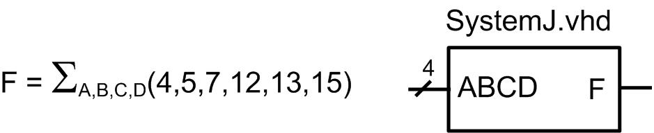

HW 8.4 - Test Benches
______________________________________________________________________
Problem 8.4.4
Design a VHDL test bench to verify the functional operation of the system in Figure 8.5 using report and assert statements. Your test bench should drive in each input code for the vector ABCD in the order they appear in the truth table (i.e., “0000”, “0001”, “0010”, …). Have your test bench change the input pattern every 10 ns using the wait for statement within your stimulus process. Use the report and assert statements to output a message on the status of each test to the simulation transcript window. For each input vector, create a message that indicates the current input vector being tested, the resulting output of your DUT, and whether the DUT output is correct.
NOTE: You will need to design the SystemJ.vhd system. Use a case statement to implement the logic.

Figure 8.5
Deliverables: Simulate your model and test bench using ModelSim. You are to upload your VHDL test bench file (SystemJ_TB.vhd) and a screenshot of your report outputs in the transcript portion of the ModelSim window (name it transcript_8_4_4.jpg) to the DropBox. Make sure to resize the transcript window so that I can tell if it is working.